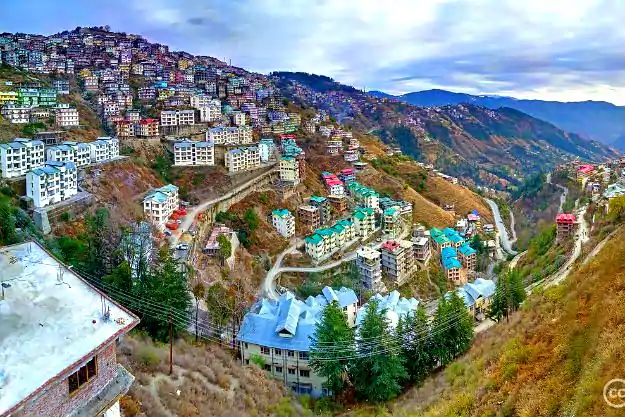

Shimla, Himachal Pradesh
Shimla derives its name from Shyamala Devi, an incarnation of the goddess Kali, whose temple existed in the dense forest covering the Jakhu Hill in the early 19th century. Shimla is the capital of Himachal Pradesh and was also the summer capital in pre-Independence India. Covering an area of 25 sq km at a height of 7,238 ft, Shimla is surrounded by pine, deodar and oak forests. Its well developed amenities, easy reach and various tourist attractions make it one of India’s most popular hill stations.
Shimla is an excellent base for treks in the surrounding hills or beyond, rafting and trout fishing at Tattapani 51 km from Shimla and golf at the 9-hole golf course at Naldehra. In winter, there is skiing at Kufri and Narkanda from January to mid-March. You can also go shopping at some of Shimla’s most lively and colorful markets. You can entertain yourself in a cultural or a dramatic performance or take pleasure in a sporting activity. A wide range of activities and attractions will surely keep you occupied all the time.
-
BEST PLACES TO STAY IN SHIMLA
Shimla offers accommodation for all budgets. There are many government and private guest houses but you need to book in advance during the peak touring season to avoid disappointment.
-
BEST PLACES TO EAT IN SHIMLA
Shimla offers a number of gastronomic experiences be it fine dining or even street-food. Practically every mid and top range restaurant and hotel offers Indian, Continental and Chinese cuisine. Sample authentic pahadi food or variety of Indian chaat items available along with an assortment of quality confectionery.
Author:
Palash Kumar
Share On Social Media: